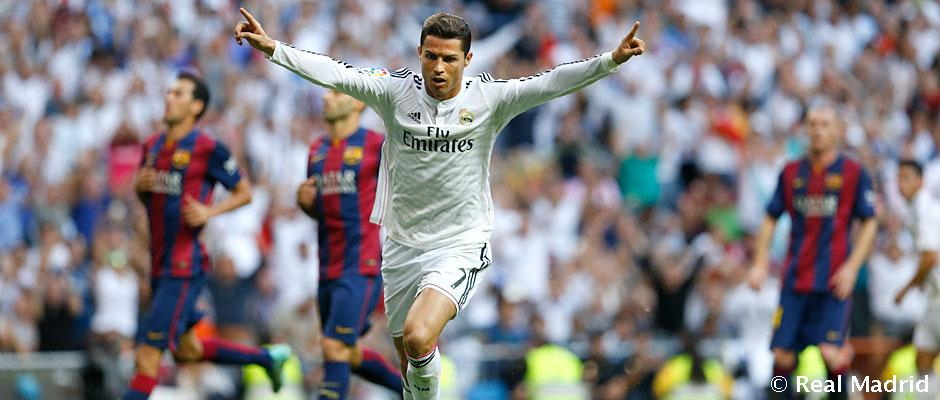

Cristiano Ronaldo ha marcado en los 3 últimos Clásicos de Liga
NOTICIA | 17/11/2015 | RAMÓN BAILÉN
El portugués suma 15 goles en sus enfrentamientos contra el Barcelona.
Cristiano Ronaldo intentará volver a ser decisivo en el primer Clásico de la temporada. Quince tantos le ha hecho al Barcelona desde que llegó a España. El máximo goleador histórico del Real Madrid afronta el partido tras haber marcado en los tres últimos enfrentamientos ligueros contra el conjunto azulgrana.
La racha comenzó en la campaña 2013/14, cuando marcó el tercer gol madridista en el Santiago Bernabéu. La pasada temporada vio puerta en la ida y en la vuelta.